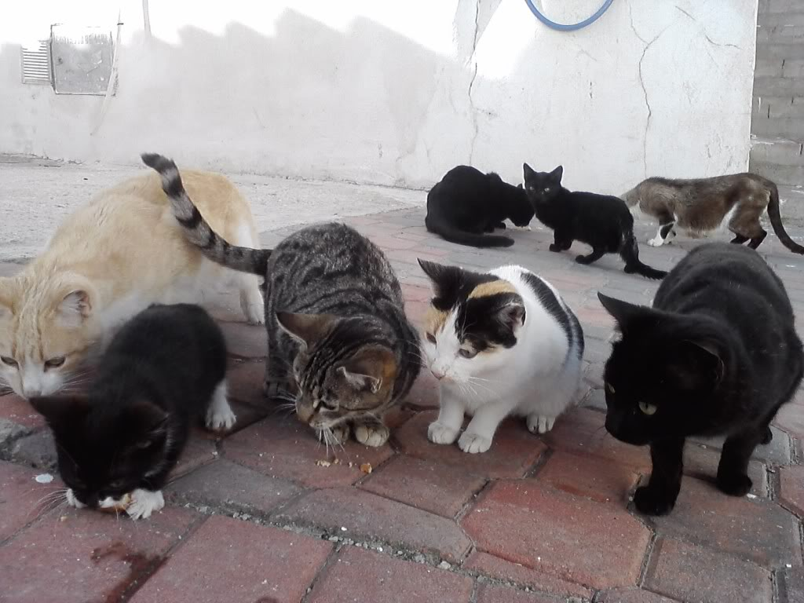
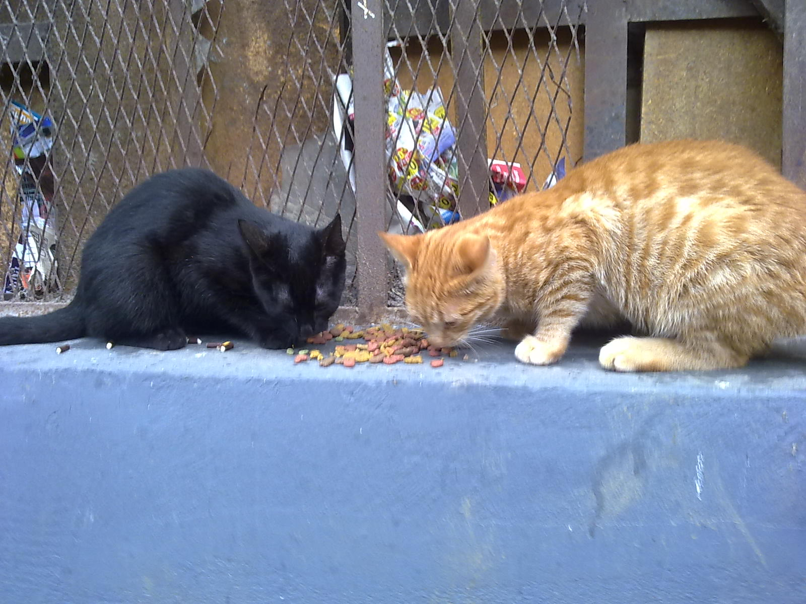

Gatos de todo corazón


Casa de Reposo
Los gatos callejeros son gatos que han nacido y crecido libres en zonas urbanas, y suelen vivir en grupos más o menos grandes, sobre todo en solares, en edificios abandonados, y en zonas abiertas o callejones. Se alimentan en general de restos y basuras, y de lo que les dan ciudadanos, empresas o asociaciones de protección animal.
Casi nunca han estado en contacto cercano con el hombre, por lo que pueden tenerle miedo incluso a dejarse tocar; su nivel de socialización es por lo común muy bajo y por ello no se pueden hacer muchas adopciones y vale más dejar que sigan viviendo libres.